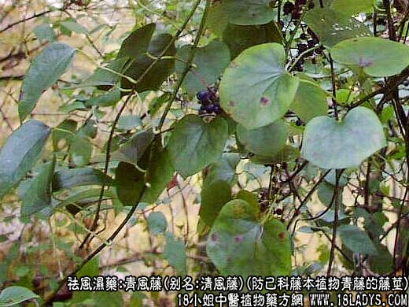
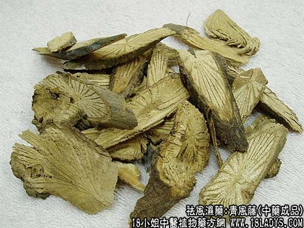
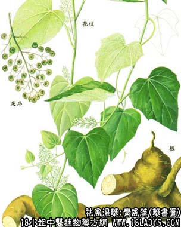

青风藤原名清风藤，始载宋《图经本草》。《本草纲目》列入草部蔓草类。本草书籍中对此药记载简略，未悉所指为何种。
来源：为防己科落叶木质藤本植物青藤的藤茎。
产地：江苏、浙江、湖北。
性状鉴别：藤茎细长圆柱形。直径1~2.5厘米。表面灰褐色，有纵皱纹及纵向皮孔。老茎外表粗糙有裂纹，茎有节，节处稍膨大，并有分枝或分枝痕。体轻，脆易断，纤维性强。断面灰黄色或暗灰色。韧皮部很窄，木质部灰黄色与灰褐色射线呈均匀放射状排列，形成车轮状，导管孔明显，中心髓部圆形色灰白。气微味苦。
主要成分：青藤含多种生物硷，包括：青藤硷、双青藤硷、土杜拉宁、清风藤硷。清风藤科清风藤含清风藤硷甲。
药理作用：实验证明清风藤硷甲具有镇痛、消炎作用：
1、镇痛，能提高痛阈。
2、消炎，对实验性关节炎能减轻肿胀。
性味：辛、苦、温。
归经：入肝、脾经。
功能：祛风湿通经络。
主治：风湿关节痛、疮疥肿痛。
临床应用：作为消炎镇痛药用。
1、制急性风湿性关节炎（热痹），关节有红肿热痛，配其它祛风湿药浸酒或水煎，方入清防饮，或用青藤硷的提纯物注射液肌注，对镇痛消炎都有一定帮助。
2、治跌打瘀肿，内服或外敷，有助于散瘀退肿。
使用注意：青藤在日本称为汉防己，但实际上与我国所称的正品防己（粉防己）并不相同，应加以鉴别。
用量：9~15g。
处方举例：清防饮：清风藤15g，汉防己9g，水煎服。
注：青风藤品种较复杂。全国多数地区所用的青风藤，主要为本文所说的青藤。其根部在河南，四川地区又作防己药用，湖北地区尚以华防己和木防己的藤茎做青风藤。上述复杂品种中，仅华防己的藤茎与青藤近似，但切断面显清晰的多层环纹，一般2~7圈，中心偏斜，其它品种，均与青藤显著不同，易于区别。